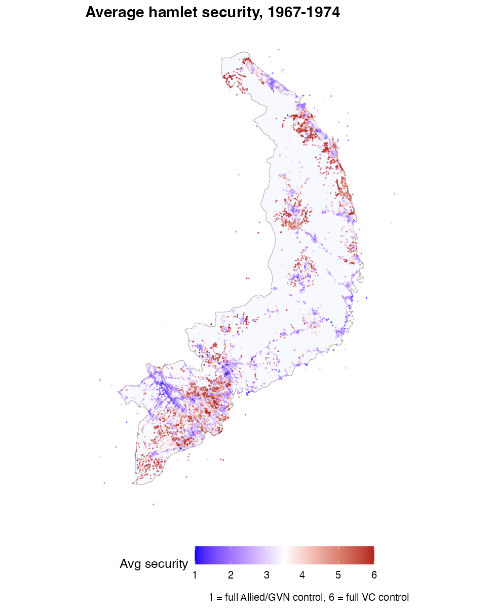
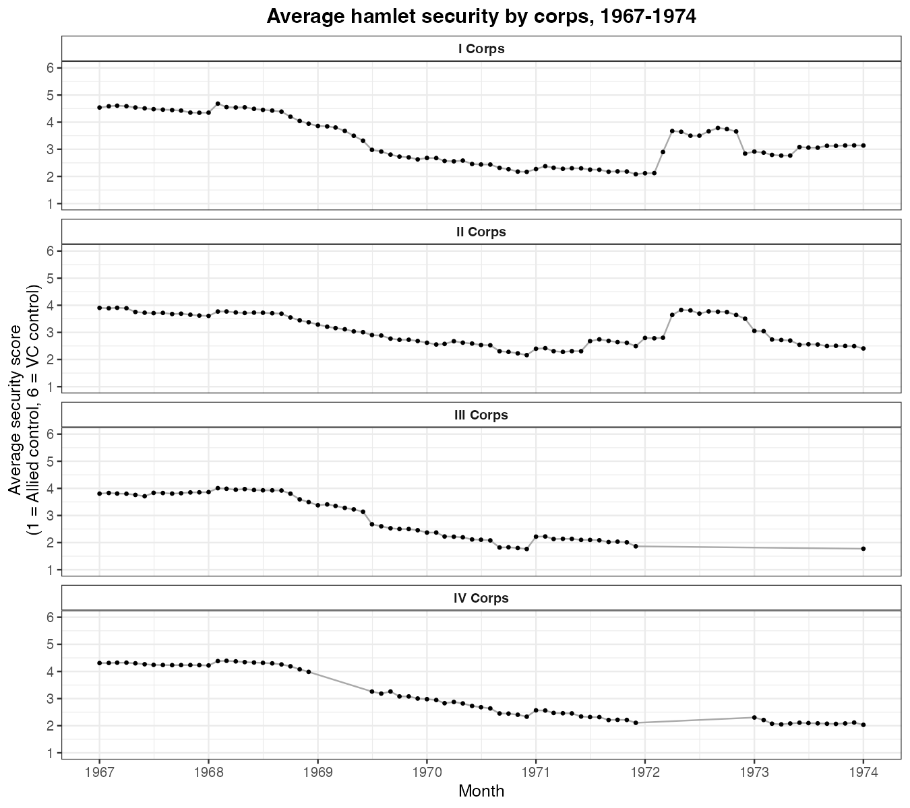

Combining and Mapping Hamlet Security (HES)
Source:vignettes/hes-hamlet-security.Rmd
hes-hamlet-security.RmdThe Hamlet Evaluation System comes in two package files:
get_hes_hamla() (HAMLA, 1967–1969) and
get_hes70() (HES-70/71, 1969–1974). They use different
column layouts, but both classify every hamlet into the same security
category — Score A through Score E, plus VC Controlled. This article
uses that common category to combine the two files into a single 1–6
security score and then maps it.
Code chunks are not run when the site is built (the HES files are large downloads); the figures shown are pre-rendered.
Combine HAMLA and HES-70/71 on the hamlet category
Keep the hamlet-level records from each file, line up the shared columns (renaming coordinates and the category field), join, then translate the category into an ordered score: A = 1 (full Allied/GVN control) … E = 5, V = 6 (full VC control).
hamla <- get_hes_hamla() |>
filter(record_type == "Hamlet Record") |>
transmute(us_hamlet_id, corps_region_code, date = as.Date(date),
lat, lng, hamlet_category = classification_level_indicator_of_hamlet)
hes70 <- get_hes70() |>
filter(rectp_record_type == "Hamlet Record") |>
transmute(us_hamlet_id, corps_region_code, date = as.Date(date),
lat = hamlet_lat, lng = hamlet_lng, hamlet_category = hcat_hamlet_category)
hes <- full_join(
hamla, hes70,
by = c("us_hamlet_id", "corps_region_code", "date", "lat", "lng", "hamlet_category")
) |>
distinct() |>
mutate(
hamlet_score = case_when(
str_detect(hamlet_category, "Score A") ~ "A",
str_detect(hamlet_category, "Score B") ~ "B",
str_detect(hamlet_category, "Score C") ~ "C",
str_detect(hamlet_category, "Score D") ~ "D",
str_detect(hamlet_category, "Score E") ~ "E",
str_detect(hamlet_category, "VC Controlled") ~ "V",
TRUE ~ NA_character_
),
hamlet_score_int = as.integer(as.factor(hamlet_score)) # A=1 ... E=5, V=6
)Map average hamlet security
Average each hamlet’s score across the whole period and plot its coordinates, colored from blue (Allied control) to red (VC control).
hes |>
filter(!is.na(hamlet_score_int), !is.na(lat), !is.na(lng)) |>
group_by(us_hamlet_id) |>
summarise(lat = first(lat), lng = first(lng),
security = mean(hamlet_score_int), .groups = "drop") |>
ggplot() +
geom_sf(data = sv_outline, fill = "ghostwhite", color = "grey70") +
geom_point(aes(lng, lat, color = security), size = 0.05, alpha = 0.5) +
scale_colour_gradient2(low = "blue", mid = "white", high = "firebrick",
midpoint = 3.5, name = "Avg security", breaks = 1:6) +
labs(caption = "1 = full Allied/GVN control, 6 = full VC control",
x = NULL, y = NULL) +
theme_minimal()
Average security by corps over time
Label each record by corps tactical zone, then track the monthly average score. The steady decline reflects the post-Tet pacification effort (lower = more secure).
hes |>
filter(!is.na(date), !is.na(hamlet_score_int)) |>
mutate(corp_label = case_when(
str_detect(corps_region_code, "1") ~ "I Corps",
str_detect(corps_region_code, "2") ~ "II Corps",
str_detect(corps_region_code, "3") ~ "III Corps",
str_detect(corps_region_code, "4") ~ "IV Corps",
TRUE ~ NA_character_)) |>
filter(!is.na(corp_label)) |>
mutate(month = floor_date(date, "month")) |>
group_by(corp_label, month) |>
summarise(avg = mean(hamlet_score_int), .groups = "drop") |>
ggplot(aes(month, avg)) +
geom_line(color = "darkgray") + geom_point(size = 0.8) +
facet_wrap(vars(corp_label), ncol = 1) +
scale_y_continuous(breaks = 1:6, limits = c(1, 6)) +
labs(x = "Month", y = "Average security score", title = NULL) +
theme_bw()